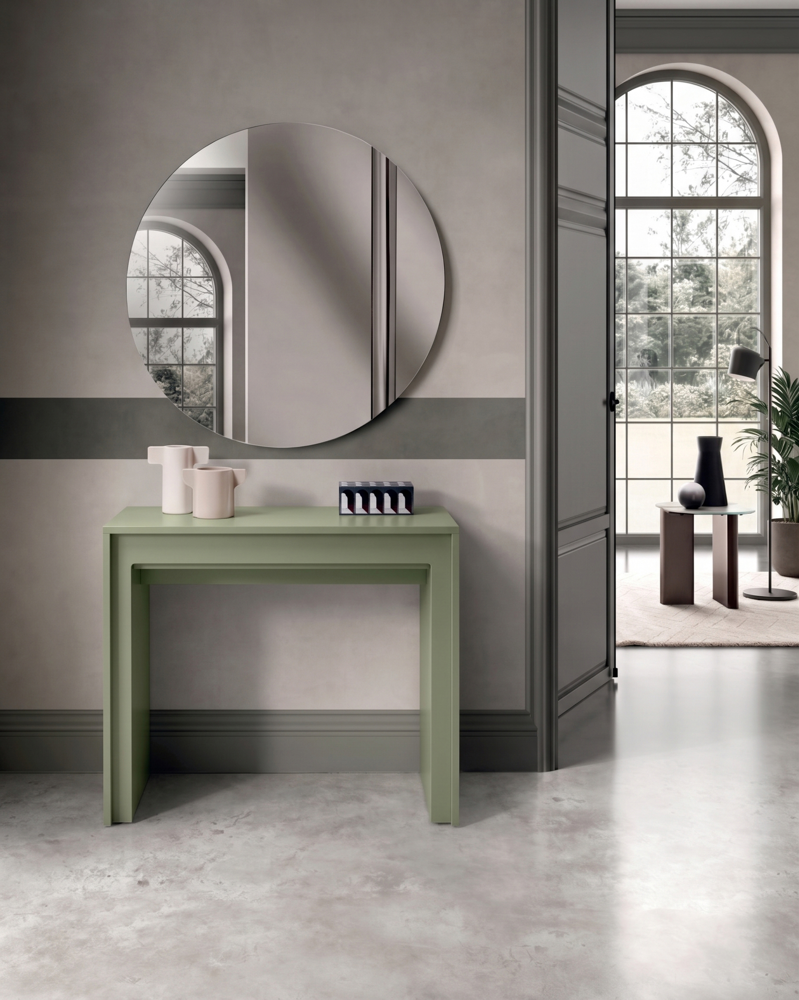

Soft Comfort · TavoliTavoli e sedie · Tavoli
Pinocchio
90cm X 42,5/302,5cm H. 78cm
Caratteristiche prodotto • Consolle Allungabile • Top in MDF laccato antigraffio • Gambe in MDF laccato antigraffio • Allunghe in melaminico Materiale…
TavoliSelezione Soft Comfort
Guarda dettagli e gallery
Richiedi informazioni su WhatsApp